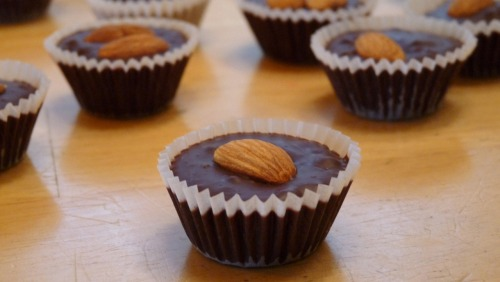

Almond Chocolate Recipe

Description
This almond chocolate recipe involves baked chocolate bread or muffin with
an almond on top. Not to be confused with almonds dipped in chocolate.
Ingredients
- 1 12oz. package of dark chocolate chips
- 3/4 cup whole almonds
- 1 tablespoon vegetable oil
- 1/2 teaspoon salt
- 1 teaspoon vanilla
- 1 package small foil (or paper) cups for candy
- Double boiler. If you don’t have one, you can fashion one using a
deep pan full of water and a glass or aluminum bowl. Just fill up the
pan 3/4 of the way with water, put the bowl in the middle, and keep the
water hot, but not boiling.
Steps
-
Spread all the almonds out on a pan and place in a warm (170°F to 200°F)
oven. Let them toast in there until they become aromatic.
-
Pour all the chocolate chips into the bowl of the double boiler.
Add the oil, salt, and vanilla, and let the chocolate begin to melt.
Stir it occasionally.
-
Take 1/4 cup of the almonds and chop them finely. Once the chocolate
has melted all the way, add the chopped almonds, and mix it together.
-
Set out all the wrappers you’ll need, and slowly begin spooning the
chocolate into each wrapper. It can be a little messy until you get
the hang of it. After filling each wrapper with chocolate, add one
or two of the whole almonds on top. You can also add sprinkles
instead, if you would like.
-
Once all the wrappers are full, place them all in the fridge to cool
and solidify.